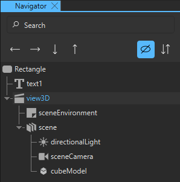
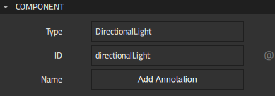
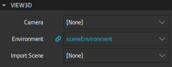

3D Views
To create a Qt Quick 3D UI project, we recommend using a Qt Quick 3D Application wizard template that adds the Qt Quick 3D components to Components and contains a 3D view. A 3D view component includes a scene environment as well as a scene light, camera, and model. A default material is attached to the model. You can attach textures to materials. For more information about creating projects, see Creating Projects.
To add a 3D view to some other kind of a project, you first need to add the Qt Quick 3D module to Components, as described in Adding and Removing Modules.

You can now drag-and-drop a View3D component to the Navigator or 2D view.

By default, a directional light and a perspective camera are used in a 3D scene created by using the wizard template mentioned above. To use other light and camera types, select the component in the 3D or Navigator view and change the type of the component in the Type field in Properties. For example, to use a point light, enter PointLight.

Similarly to other components, you can select a 3D view in Navigator or the 3D view and modify its property values in the Properties view. Use the properties in the View3D tab to set properties specific to a 3D view component.

The Camera property defines which camera is used to render the scene to the 2D view. If this property is not defined, the first enabled camera in the scene will be used.
The Environment property specifies the Scene Environment used to render the scene. By default, the first Scene Environment in the scene is set as the property value.
The Import Scene property defines the ID of the component to render to the 2D view. The component does not have to be a child of a 3D view component. This referenced component becomes a sibling to child items of a 3D view, if there are any. You can use this property, for example, to create a split screen view showing your scene from multiple cameras. For more information on how to to use a 3D view to show a scene from multiple cameras, see Qt Quick 3D - View3D Example.
Note: The Import Scene property can only be set once. Subsequent changes will have no effect.